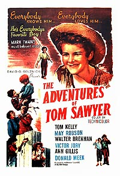
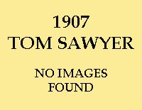
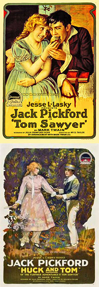
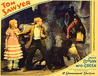
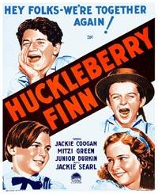
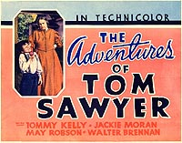
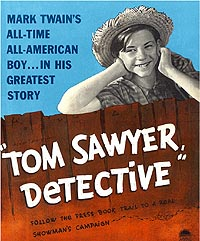
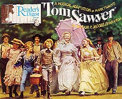
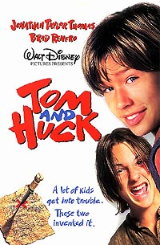

){kind=link}
){kind=link}
){kind=link}
){kind=link}
){kind=link}
){kind=link}
){kind=link}
){kind=link}
){kind=link}
){kind=link}
){kind=link}
){kind=link}
){kind=link}
){kind=link}
){kind=link}
){kind=link}
){kind=link}
){kind=link}
){kind=link}
){kind=link}

|
 THEATER POSTER c1950 RE-RELEASE OF 1938 SELZNICK FILM |
Mark Twain's times included the birth of a
new medium, the movies. He lived long enough to have seen
the first film version of one of his books, the 1907 Tom
Sawyer. Given his fascination with new inventions, he
might have wanted to see this adaptation, but there is no
record of his having done so. |
|
|
|
|  Like about 90% of the early silent movies, this first film adaptation of The Adventures of Tom Sawyer seems to be lost. The very brief entry on it in the Internet Movie Data Base contains only two names, under "Writing Credits" -- Gene Gauntier and Mark Twain. |
|
|
|
|
|  A decade later William Desmond Taylor directed two film adaptations of MT's novel, both produced by the Famous Players Picture Corporation and distributed by Paramount. Julia Crawford Ivers' script for Tom Sawyer (1917) derives mainly from chapters 1 - 6 and 13 - 17 of the text. Jack Pickford, Mary's younger brother, played Tom, Clara Horton played Becky, and Robert Gordon played Huck. Tom Sawyer was followed up a year later by Huck and Tom, or The Further Adventures of Tom Sawyer (1918), also for Famous Players and Paramount and with the same cast. This time Ivers' script focused more on the episodes that feature the two boys -- from the murder in the graveyard through the discovery of the treasure -- but as you can see from the poster below left, it still emphasized Tom's relationship with Becky. (In 1920 Taylor directed a different cast in the Famous Players' production of Huckleberry Finn.) For an autographed publicity photo of Gordon as Huck, CLICK HERE.The links below will open up several publicity stills from Tom Sawyer (left) and Huck and Tom (the other three): |
|
| 
The first sound adaptation of MT's novel was
made in 1930 by Paramount, and featured Jackie Coogan (whom
Chaplin had made a star at age 7 in The Kid [1921]) as
Tom. Huck was played by Junior Durkin, Becky by Mitzi Green,
and Sid by Jackie Searl. Clara Blandick, who would be better
known for an Auntie named Em in The Wizard of Oz
(1939) played Aunt Polly. In the second still photo
below, Charlie Stevens is playing Joe and Tully Marshall is Muff Potter (the actor who played Dr. Robinson was uncredited): |
|
|  "I did wish Tom Sawyer was here," Huck says in the novel he narrates. Early Hollywood seems to have been felt the same way (at least when box-office star Jackie Coogan played him). After Paramount's success with Tom Sawyer in 1930, the studio hired Norman Taurog to direct a new version of Huckleberry Finn. Released in 1931, it again starred Jackie Coogan, Junior Durkin, Mitzi Green and (again as Sid) Jackie Searl. That's them you see at left. Despite Jim's absence from the poster, the film does follow his and Huck's misadventures on the raft -- though as you can see from the following publicity stills, Tom comes along with them for the ride: ESCAPE FROM PAP'S | ON THE RAFT | WITH THE KING & DUKE |
|
| 
A year before he made Gone with the Wind, David O. Selznick
went back to ante bellum Missouri with his version of The
Adventures of Tom Sawyer (1938). Directed by Norman
Taurog, who had done Huck Finn for Paramount in 1931
and who also directed Boys Town with Mickey Rooney and
Spencer Tracy in 1938, the film starred Tommy Kelly as Tom,
Jackie Moran as Huck, Ann Gillis as Becky Thatcher, May
Robson as Aunt Polly, Philip Hurlic as "Little Jim" and gets
memorable performances from Walter Brennan as Muff Potter and
Victor Jory as Injun Joe. |
|
|  MT wrote Tom Sawyer, Detective along with Tom Sawyer Abroad in the mid-1890s, two decades after Tom's first novel appeared. At the time he was more desperate for money than at any other point in his career, and seems mainly to have been trying to cash in on the established marketability of Tom's name. Presumbably Adolph Zukor had much the same motive when he produced this film for Paramount at the same time that Selznick was making his film. The cover of the film's publicity book (left) shows a young Donald O'Connor, who actually played Huck. Huck and Tom both appear in the two posters below. |
|
|  This 1973 musical adaption was Reader's Digest's first venture into movie-making. It starred Johnny Whitaker as Tom, Jeff East as Huck and Jodie Foster as Becky. The score (by Richard Sherman, Robert Sherman and John Williams) received both Oscar and Golden Globe nominations. Reader's Digest used Jeff East again when it brought out a musical version of Huckleberry Finn in 1974, though Tom's character doesn't appear in this sequel. |
|
|

Jonathan Taylor Thomas was a 14-year-old TV
star when Walt Disney Pictures hired him to play Tom;
13-year-old Brad Renfro was making his third movie in a
year and a half. Disney released this 1995 movie under two
other names as well: The Adventures of Tom and Huck
and just plain Tom Sawyer, but it was best known by
the name Tom and Huck. On the one hand, that title
suggests how well known the pair was by the end of the last
century. On the other, since the movie's plot derives
exclusively from Tom's novel, not Huck's, the prominent use
of Huck's name suggests there may have been concern about
whether Tom's name by itself would draw enough attention
and customers to the film. In MT's novel, we learn that Tom
"did not care to have Huck's company in public places." Now
he seems to need it to keep his own place in the public's
mind. When Disney brought out The Adventures of Huck
Finn in 1993, Tom's character was left out
entirely. |
|